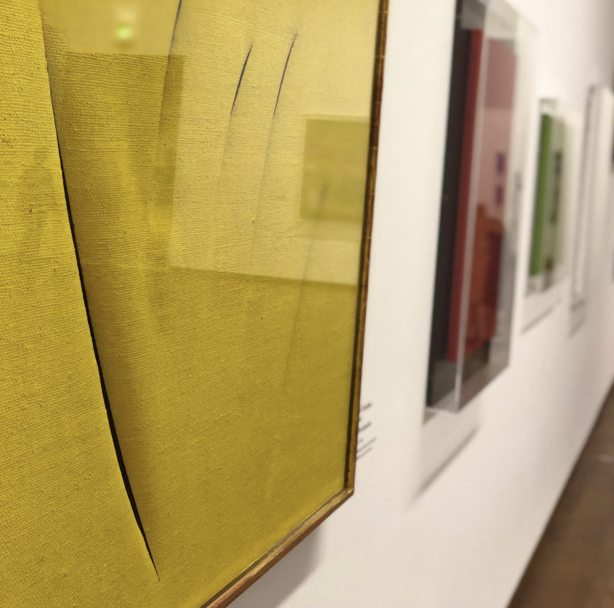
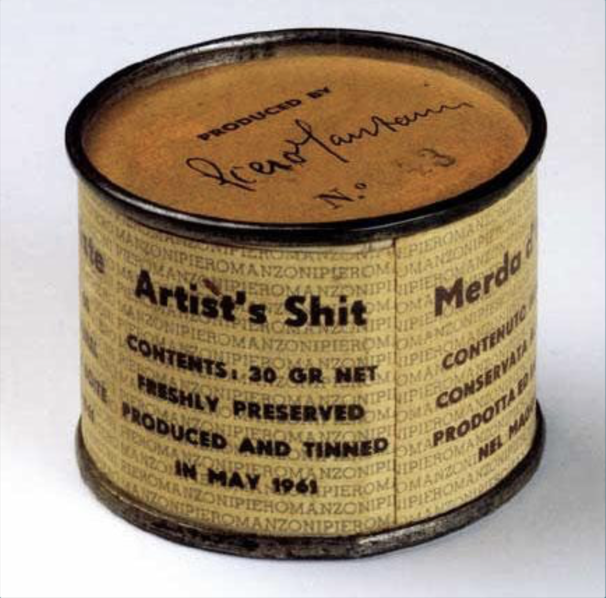
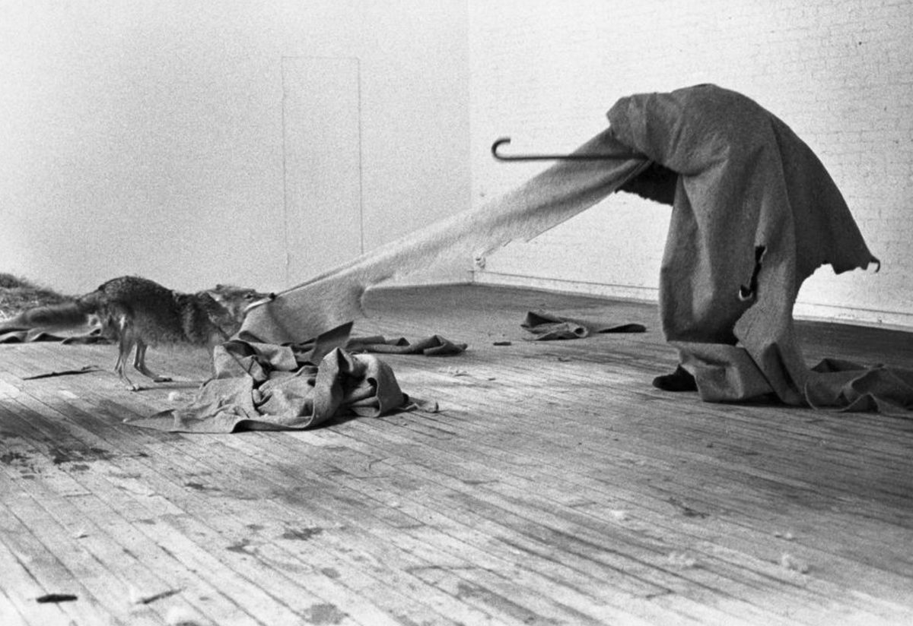

Современный арт-рынок довольно сложная штука, споры об адекватности которой и «соответствия» оной самому предмету торговли даже и не думают прекращаться.
Когда мы смотрим на произведение искусства, проданное за сотни миллионов долларов в голове любого русского человека неизбежно брезжит вопрос (и нерусского тоже, причем в той же интернациональной формулировке): «какого х…»? И если в отношении искусства классического это частично компенсируется верой в авторитет мировой художественной культуры и очевидной сложностью сделанного (как эквивалента таланта или критерия ценности), то в отношении искусства современного эти факторы в основном уже не срабатывают — явно трудно их распространить на выставленный в музее писсуар или пустой холст с дыркой посередине.


Отсюда остается маленький шаг до мыслей о заговоре капитала и аналогий с «голым королем». Ну, ясень пень, что, если художник продает свое фасованное дерьмо по цене золота как арт-объект, то что-то тут не так!
Что-то тут не так.
В мае 1961 года Пьеро Мандзони разделил собственные фекалии на порции по 30 грамм, разложил в 90 баночек и запечатал. Баночки были пронумерованы и на каждой красовались надписи на четырёх языках — «Дерьмо художника», а также автограф самого Мандзони. Каждая баночка с фекалиями была продана на вес золота в буквальном смысле – по такой же цене, как стоили бы 30 грамм золота. В 2008 году на аукционе Sotheby’s – банка №83 была продана за 97 тысяч фунтов стерлингов. Получается, что сегодня дерьмо художника почти в 100 раз дороже золота.


Или, вот например, дохлая акула Херста, законсервированная в формальдегиде и проданная за 12 миллионов долларов. Она, кстати вскорости протухла и ее пришлось менять… видимо не выдержала давления концептуальности замысла и сгнила на глазах у офигевшего покупателя. Как уж тут не задуматься о манипуляции и наглом цинизме загнивающих (долго и упорно) капиталистов.
Структура арт-рынка.
Существенные изменения в структуре арт-рынка, как я понимаю, произошли в конце 1990х, начале 2000х, когда на рынок искусства ринулись «новые богатые» (молодые топменеджеры хедж-фондов, русские и китайские нувориши и тд). Это в свою очередь привело к появлению феномена крупных коммерческих ярмарок. Так их количество выросло за последние 15 лет с 20 до почти 300. А общая выручка всех ярмарок к 2015 достигла чуть ли не 50% всего рынка и перевалила цифру 10 млрд.долларов. Именно в конце 20 века начался стремительный рост цен на произведения современных художников, еще не «освященных» дыханием вечности и авторитетом времени.
Миф о Ван Гоге и модернистах.
Хотя, если посмотреть поглубже, то мы увидим, что и вначале прошлого века ситуация может и отличалась, но не так уж чтобы принципиально. Яркий пример небывалого мифотворчества — Ван Гог. 90% того, что мы знаем об этом художнике неправда, вымысел… попросту наглое вранье. И это особенно удивительно, ведь от Ван Гога осталось много письменных источников. Главным идеологом мифа о гении-безумце стал немецкий галерист Юлиус Мейер-Грефе. Именно он последовательно выдумал весь этот бред, который упорно держится в общественном сознании вот уже 100 лет. А причина проста и тривиальна — бабло. Юлиус был все-таки неплохим искусствоведом и начал покупать Ван Гога, надеясь на скорые продажи и рост цен. Но что-то как-то не поперло сперва. Тогда он и решил создать миф о гениальном, необразованном, нищем психе-истеричке, творящем шедевры в порывах нуменозного безумия. И эта история, не то чтобы прям исключение.
Хрестоматийными стали, рассказываемые «шепотом», примеры создания «дорогих» имен Пикассо и Матисса, за которыми стояли деньги и финансовые планы то немецких, то еврейских, то русских дельцов. Вышедший 10 лет назад фильм «Современное искусство: великий мыльный пузырь» поведал и о том, как уже современные галеристы и арт-дилеры формируют цены на нужных художников, например, сосредотачивая в одних руках существенную часть произведений Уорхола и постепенно подогревая стоимость круговыми точечными продажами и масштабными выставочными проектами по всему миру. Кстати, с Пикассо, как некоторые утверждают, та же история.

А в итоге к сегодняшнему дню гипотетическая суммарная стоимость работ великого испанца стала сравнима с капитализацией Газпрома, а это несколько десятков миллиардов долларов! Данные, понятно, разнятся: то Пикассо — это половина Газпрома, то треть, то весь… но сути дела это не меняет, тут важен сам факт: творчество одного человека достигло капитализации сравнимой с гигантской государственной корпорацией.
Причина парадокса.
Всё это так. Ну или почти так. Или примерно так. А может и совсем не так. Впрочем, какая разница? Как это какая разница, спросите вы? А так. Вся интрига вопроса заключается в том, что вне зависимости от игры капитала, вне зависимости от правдивости громких историй о «сделанных ценах» и достоверности манипулятивных стратегий на художественном рынке — истинная причина аксиологического (ценностного) парадокса искусства в наше время — совсем в другом.
Есть ли спекуляции на рынке искусства? Есть. Влияет ли капитал, массмедиа и маркетинг на ситуацию и самоё восприятие? Да. Является ли это основной причиной странной вакханалии (представляющейся зачастую таковой со стороны) в современном арт-мире? Нет.
Post hoc, ergo propter hoc — известная логическая ошибка. После чего-то — совсем не значит, что по причине этого. Как правило причины сложных системных процессов лежат не на поверхности, глубоко укореняясь в вещах, казалось бы напрямую несвязанных с рассматриваемым фактом.
Как вы думаете, почему женщины перестали носить шляпки?
Почему демонстрации на улицах Берлина сменились гей-парадами, а из уст, казалось бы нормальных образованных людей в столице нашей родины можно услышать немыслимое еще 30 лет назад оскорбительное слово «рашка»?
Почему у Бузовой количество подписчиков в инстаграм сравнимо с населением средней европейской страны, а армия подписчиков «иконы стиля» Ким Кардашьян превышает население самой России?
Почему страны, еще совсем недавно пускавшие друг другу кровь миллионами литров на протяжении сотен лет вдруг кинулись в объятия и объединились в Евросоюз?
Почему, никем серьезно не воспринимаемые и жутко критикуемые импрессионисты в 20 веке стали самым любимым художественным явлением в мире?
Почему, волновавшие интеллектуальное сообщество многие столетия вопросы власти, справедливости и идеалов всерьез сменяются на темы бессмертия, нового могущества и пост-человеческой реальности?
Почему, если после долгого перерыва ты вдруг включишь телевизор и пощелкаешь пульт этак часика 3-4, то единственная мысль которая может придти в голову, что или ты сошел с ума или весь мир?
Какое отношение всё это имеет к искусству?
Самое прямое. Прямее, как говорится, не бывает.
Искусство — это не какая-то оторванная от «реальной» жизни волшебная страна эстетики и розовых пони. Это и есть сама жизнь, проявленная в особой оптике творческого волюнтаризма (именно волюнтаризма, как стремления реализовать желаемое без учёта «объективных» обстоятельств и возможных последствий). Причем жизнь, которая ногами стоит в настоящем, но знает и прошлое и будущее, только не в форме дискурсивного научного знания, а в форме бессознательной или полусознательной погруженности в синхронность временных взаимосвязей.


И в этом смысле с одинаковой достоверностью можно заявить, что это мир искусства вертит капиталом на том, на чем надо вертеть то, что вертится. Только делает это не из природной зловредности по отношению к «хлеба дающему», а по причине особой чувствительности к глобальным эволюционным процессам, которые даже и не думали завершаться.
Ходят слухи, что купленные банки с дерьмом Мандзони по замыслу автора должны были начать взрываться через какое-то время прямо в галереях и коллекциях покупателей. Впрочем, несколько банок действительно взорвались, только их владельцы упорно молчат об истинной сути содержимого.
Кстати, помощник Мандзони утверждает, что там не дерьмо, а…